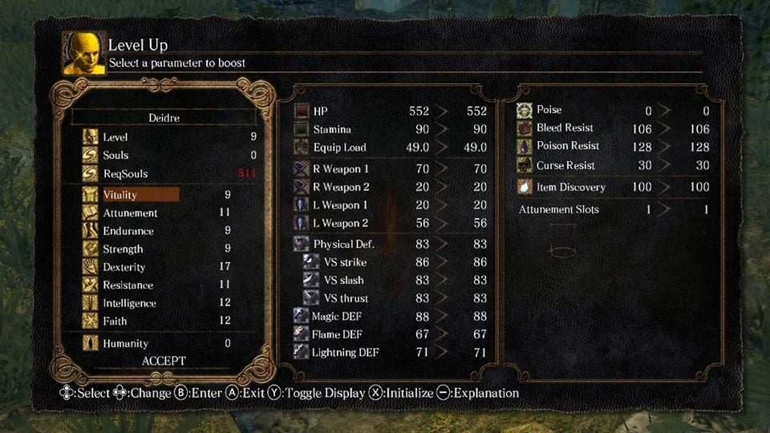

Build Crafting
RPG Elements
one the things that also define a soulslike is the rpg elements you can lvl your character or put them into specific stats that suit a persons playstyle
Leveling
you will see a traditional level up menu standard to many rpgs where you can spec into stats 